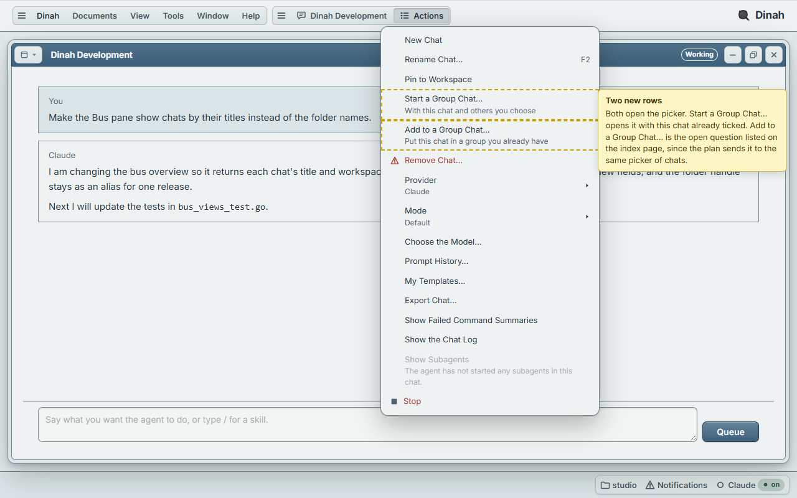
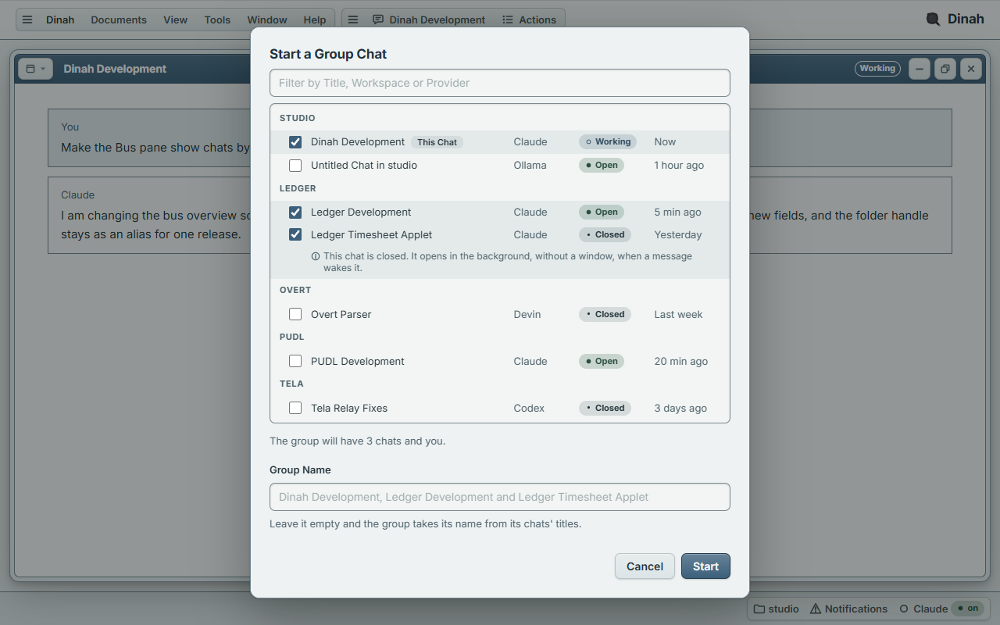
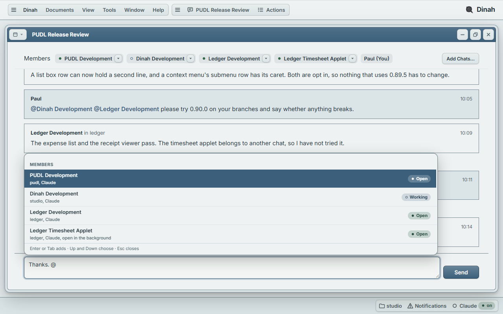
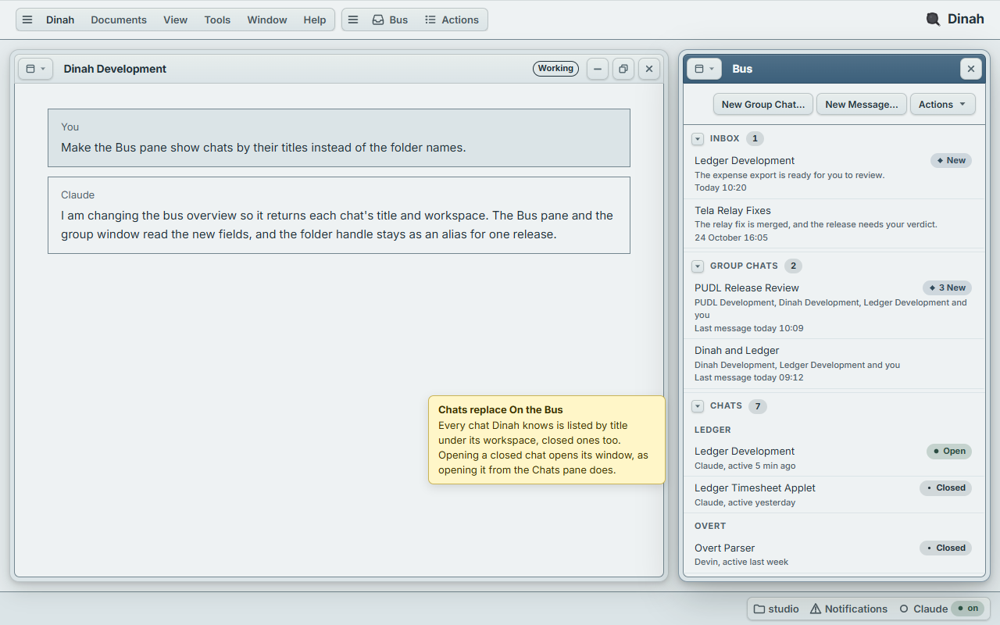

Group Chats Mockup
These pages draw the design in docs/plans/group-chats.md with Dinah's own stylesheets, in its default Mineral theme, so that Paul can mark it up before any of it is built. A chat here is treated like a consultant assigned to a workspace, and a group chat is where Paul talks with several of them at once, as he would in a team's group chat.
Each page is static HTML with a little script. The yellow notes explain the mockup and are not part of the design, and a dashed outline marks a row that is new. The picker's filter and check boxes work, and a member chip's button in the group window opens its menu.
The Screens
1. A Chat's Actions Menu

Dinah Development is in front, and its Actions menu is open in the menu bar, where Dinah puts the front window's commands. Start a Group Chat… and Add to a Group Chat… sit after Pin to Workspace, among the chat's existing commands.
2. The Picker

The picker lists every chat Dinah knows under its workspace, with its provider, its state and when it was last active. The chat it was opened from is ticked and its workspace comes first. A ticked closed chat explains that it opens in the background when a message wakes it, and the empty name field shows the name the group would take.
3. The Group Window

The members are chips, each with its state and a button for its menu, and Add Chats… opens the picker. Each message is under its sender's title. The composer's @ list is open here, and the same window with the list closed shows a closed chat being woken by a mention.
4. The Bus Pane

The pane has four sections, which are the inbox, the group chats, every chat by workspace with its state, and the trusted links. The list of who is on the bus is gone, and no folder-based handle appears anywhere. Narrow the browser to see the pane alone.
How a Chat's State Is Shown
Every state is a PUDL status badge, which leads with a glyph, so the state never rests on colour alone. The glyphs are the ones Dinah already uses for an agent's state.
| State | Badge | Meaning |
|---|---|---|
| Working | Working | A turn is running. The glyph is the ring, in the accent colour. |
| Open | Open | The chat is running and idle, in a window or in the background. The glyph is the circle, in green. |
| Closed | Closed | The chat is saved but not running. The glyph is a small circle, in the muted text colour. |
In the group window there is no room for a badge in a chip, so a chip shows the same glyph in the same colour, with the word as its accessible name and tooltip.
Questions the Plan Does Not Answer
- The plan says Add to a Group Chat… opens the same picker as Start a Group Chat…, but that picker chooses chats, and adding this chat to an existing group needs a choice of group. I would make it a submenu of the groups this chat is not in, with New Group Chat… at its end. Should it be that, or a small dialog of its own?
- A title with spaces in it makes a mention in plain text ambiguous, because nothing marks where "@PUDL Development the release…" stops being a title. I would have the composer insert the mention as a token, as the chat composer already does for an @ attachment, and have the bus carry the mentioned chats beside the text, so nothing has to parse it. How should an agent write a mention in what it sends?
- The mockup has Paul add Ledger Timesheet Applet to the group before mentioning it. Should a mention of a chat that is not a member wake it and add it, or be refused?
- The plan shows a chat opened in the background simply as open. Should it have a state of its own, with its own glyph, so that Paul can see at a glance which chats are running without a window and spending turns?
- The inbox here holds only messages sent to Paul himself, and a group's messages show as a count on the group's row. Should a group message that mentions Paul also appear in the inbox?
- Rooms today accept @everyone. The plan does not say whether a group keeps it, so the mockup leaves it out of the @ list. Should it stay?
- Two untitled chats in one workspace would both be "Untitled Chat in studio", so neither the picker nor a mention could tell them apart. Should an untitled chat be given a title before it can join a group, or be shown with something more, such as when it started?
- The plan puts Leave in the group window's menu, but it also says the person is always a member. What should leaving a group do for Paul, other than deleting it?
Making the Screenshots
Running node make-shots.mjs in this folder opens each page from the file system in Edge, headless, through the copy of playwright-core in the desktop frontend's e2e folder, and writes the pictures to shots/. Each page is taken at 1280 by 800, and the Bus pane is also taken at 420 pixels wide. Giving page names after the command takes only those pages.